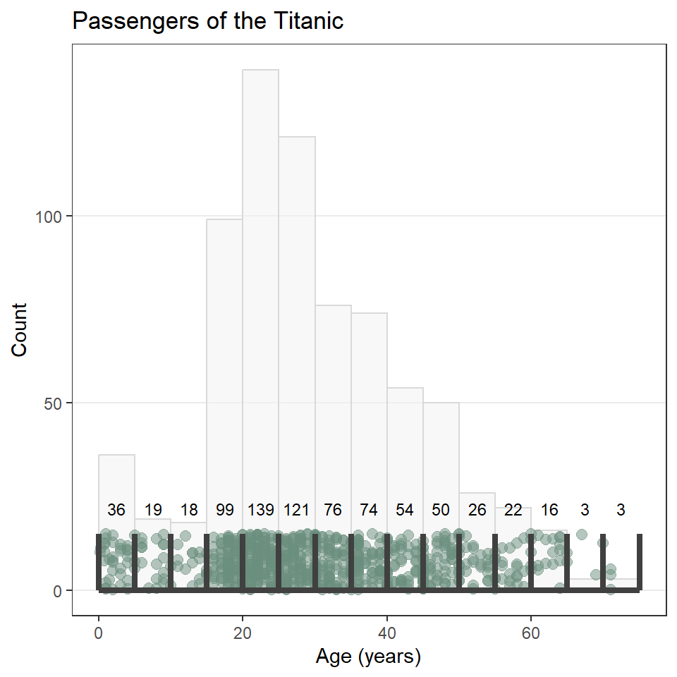

Lab 05: Visualizing Distributions
Outline
Objectives
This lab will guide you through the process of
- visualizing amounts with bar charts
- visualizing distributions with
- histograms
- probability density plots
- cumulative distribution plots
- boxplots
- base R alternatives to ggplot
R Packages
We will be using the following packages:
You do not have to explicitly attach the {graphics} package, as it comes pre-loaded every time you open a new R session. That’s partly what it means for it to be a “base” R package.
Data
-
penguins- Includes measurements for penguin species, island in Palmer Archipelago, size (flipper length, body mass, bill dimensions), and sex.
- package:
palmerpenguins - reference: https://allisonhorst.github.io/palmerpenguins/reference/penguins.html
-
DartPoints- Includes measurements of 91 Archaic dart points recovered during surface surveys at Fort Hood, Texas.
- package:
archdata - reference: https://cran.r-project.org/web/packages/archdata/archdata.pdf
-
titanic- Provides information on the fate of passengers of the Titanic, including economic status, sex, age, and survival.
- package: none
- reference: https://wilkelab.org/SDS375/
- note: we’re going to download this one rather than get it from a package
Bar charts
Bar charts or bar plots use the length or height of bars to represent the amount of some variable across categories or groups. With ggplot2, you can create a bar chart with geom_bar(). As an example, we’ll use the penguins data set.
penguins# A tibble: 344 × 8
species island bill_length_mm bill_depth_mm flipper_…¹ body_…² sex year
<fct> <fct> <dbl> <dbl> <int> <int> <fct> <int>
1 Adelie Torgersen 39.1 18.7 181 3750 male 2007
2 Adelie Torgersen 39.5 17.4 186 3800 fema… 2007
3 Adelie Torgersen 40.3 18 195 3250 fema… 2007
4 Adelie Torgersen NA NA NA NA <NA> 2007
5 Adelie Torgersen 36.7 19.3 193 3450 fema… 2007
6 Adelie Torgersen 39.3 20.6 190 3650 male 2007
7 Adelie Torgersen 38.9 17.8 181 3625 fema… 2007
8 Adelie Torgersen 39.2 19.6 195 4675 male 2007
9 Adelie Torgersen 34.1 18.1 193 3475 <NA> 2007
10 Adelie Torgersen 42 20.2 190 4250 <NA> 2007
# … with 334 more rows, and abbreviated variable names ¹flipper_length_mm,
# ²body_mass_gYou can reorder the species variable based on their frequencies (with the most frequent first, the least frequent last) using fct_infreq(), short for factor infrequent. The word ‘factor’ here refers to the way that R represents categorical or grouping variables.
ggplot(penguins) +
geom_bar(
aes(x = fct_infreq(species))
)It will sometimes be preferable to orient bar charts horizontally. The simplest way to do that is to pass the factor or grouping variable to the “y” argument in the aes(). Notice that you have to change the labels, too, since the count will now be on the x-axis, species on the y-axis.
ggplot(penguins) +
geom_bar(
aes(y = fct_infreq(species)),
)You will notice now that the Adelie penguins, the most frequent species in our data, appear at the bottom. This is because the ordering starts at the origin, as it did when these were arrayed on the x-axis. In this case and in many other cases, it will make sense to re-order these with the most frequent category or species at the top and the least frequent on the bottom. To do that, we use fct_rev(), short for factor reverse, as in “reverse the order of this factor.”
ggplot(penguins) +
geom_bar(
aes(y = fct_rev(fct_infreq(species)))
)Now, let’s update the default fill color and theme. We’ll also remove most of the grid lines, as they do not contribute to interpreting the data.
ggplot(penguins) +
geom_bar(
aes(y = fct_rev(fct_infreq(species))),
fill = "#6B8F7E"
) +
labs(
x = "Count",
y = NULL,
title = "Palmer Penguins"
) +
theme_bw() +
theme(
panel.grid.minor = element_blank(), # remove all minor grid lines
panel.grid.major.y = element_blank() # remove major grid lines only on the y-axis
)Exercises
- Create a bar chart of the counts of dart point types using the
DartPointsdataset (the types are stored in theNamevariable). Remember to load that data into R withdata("DartPoints"). Then do all of the following:- Re-orient the figure horizontally.
- Order the types by their frequency, with the most frequent on the top, the least frequent on the bottom.
- Add appropriate labels.
- Change the theme and remove unnecessary grid lines.
Histograms
A histogram is an excellent aid for visualizing the distribution of numerical data. Making one involves “binning” a continuous variable, counting the number of its values that fall into each bin, then drawing a rectangle for each bin whose height is proportional to the count for that bin. A good example of this is the distribution of a population over age ranges, like the age distribution of the passengers on the ill-fated voyage of the Titanic. Before we get to what the histogram looks like for this macabre example, let’s first have a look at the raw data:1
1 These data come from Claus Wilke’s Fundamentals of Data Visualization.
To be able to work through the examples in this section, you need to run the code below. We’ll explain what this code does in another lab.
titanic <- read.csv("https://raw.githubusercontent.com/wilkelab/SDS375/master/datasets/titanic.csv")head(titanic) class age sex survived
1 1st 29.00 female survived
2 1st 2.00 female died
3 1st 30.00 male died
4 1st 25.00 female died
5 1st 0.92 male survived
6 1st 47.00 male survivedYou see that our data has an age for each individual passenger. If we bin those ages into 5 year intervals (0-5, 5-10, 10-15, and so on) and count the number of passengers that fall into each bin or age range, we get a summary table that looks like this.
| Age Range | Count | Age Range | Count | |
|---|---|---|---|---|
Here’s how those values look as bins:

To construct the actual histogram, we use ggplot() and geom_histogram(). Importantly, we pass ggplot() the raw tidy data, not the summary table, and in this case, we are going to use the default number of bins. Here is how that looks:
ggplot(titanic) +
geom_histogram(
aes(age)
)`stat_bin()` using `bins = 30`. Pick better value with `binwidth`.Notice that ggplot2 provides an informative message that the default number of bins used in this plot is 30, which makes the age interval for each bin about 2.5 years. We can (and SHOULD!) change this by specifying a different number of bins with bins, as the number of bins can dramatically change the interpretation of the distribution.
ggplot(titanic) +
geom_histogram(
aes(age),
bins = 10
)Unfortunately, the default histogram produced by ggplot2 doesn’t do a great job of conveying the relationship between the axis text and the ranges represented by the widths of the rectangles. For instance, zero falls at the center of the first histogram, which would seem to suggest that the range of values represented by that rectangle includes negative ages. What it is really saying is that zero falls in the range of that bin, but that is not obvious. One solution to this issue is to set the binwidth (or bin width, as in the range of values for that bin) and the bin boundary (or where the left side of the rectangle is positioned relative to the bin range). That’s a tad confusing, I know, but the basic idea is that if you set the width to 5 and the boundary to 0, then the bin for the range 0-5 will start at 0, and the bin for the range 5-10 will start at 5, and the bin for 10-15 will start at 10, and so on. Finding the best options for visualizing your data will, of course, involve some trial and error.
ggplot(titanic) +
geom_histogram(
aes(age),
binwidth = 5,
boundary = 0
)As always, you can change the fill and outline color for these plots by supplying those parameters to the geometry. We can also clean up the labels with labs() and change the theme if we like (and we do). And since the heights of these bars are what we care about, we can turn off the light vertical grid lines that ggplot2 adds by default by specifying this as a theme() option.
ggplot(titanic) +
geom_histogram(
aes(age),
binwidth = 5,
boundary = 0,
fill = "#6B8F7E",
color = "#4C6257",
) +
labs(
x = "Age (years)",
y = "Count",
title = "Passengers of the Titanic"
) +
theme_minimal() +
theme(
panel.grid.major.x = element_blank(),
panel.grid.minor = element_blank()
)One last point before moving on. You may have noticed that the data contains a binary variable survived. Do you think maybe the age distribution of those that survived differs from the distribution for those that did not survive? Do you think maybe they were older? Younger? Or is there no difference? Let’s explore this a little by visualizing the different distributions using facet_wrap().
ggplot(titanic) +
geom_histogram(
aes(age),
binwidth = 5,
boundary = 0,
fill = "#6B8F7E",
color = "#4C6257",
) +
labs(
x = "Age (years)",
y = "Count",
title = "Passengers of the Titanic"
) +
facet_wrap(vars(survived)) + # <----- adding facets here
theme_minimal() +
theme(
panel.grid.major.x = element_blank(),
panel.grid.minor.x = element_blank()
)
Hmmmm 🤔. What do you think this means? And how might it help to compare this to the total distribution?
Exercises
- Create a histogram of penguin bill length using the
penguinsdataset from the palmerpenguins package. Then do all of the following:- Change the number of bins (try two different options).
- Try specifying the bin width and boundary.
- Change the fill and outline color.
- Reset the labels to be more informative.
- Change the theme and remove the vertical grid lines.
- Repeat (1), but use the
DartPointsdataset from the{archdata}package, creating a histogram of dart length (Lengthin the table).- Does it look like the dart types might differ in length? Or maybe they’re all basically the same?
Density Plots
Here you will learn how to generate a “density” plot or a plot of the underlying probability density of a variable using ggplot() and geom_density(). This is similar to a histogram in that it seeks to show the distribution of a continuous random variable. It differs, however, in the way it goes about doing that. To see how they differ, let’s first have a look at these two plots of the titanic data. The one on the left is a histogram, the one on the right a density plot.
To be able to work through the examples in this section, you need to run the code below. We’ll explain what this code does in another lab.
titanic <- read.csv("https://raw.githubusercontent.com/wilkelab/SDS375/master/datasets/titanic.csv")

The big difference here is that histograms discretize a sample using bins, counts the number of observations that fall into each bin, and then represents those counts using the heights of the rectangles. A density plot uses a method known as kernel density estimate (or KDE) to estimate the density of each observation and represents it using the height of a smooth and continuous curve. The KDE approach works like this. First, you define the kernel, often the Gaussian distribution with constant variance but a mean defined by each observation. Then you define a bandwidth, which is used to scale each kernel. The heights of the kernels are then summed to produce a curve like the one above.
As with the histogram, we specify a density geometry for ggplot using geom_density(). We can also update the fill and outline colors, remove unnecessary grid lines, specify the labels, and choose a simpler theme.
ggplot(titanic) +
geom_density(
aes(age),
fill = "#6B8F7E",
color = "#4C6257"
) +
theme_minimal() +
theme(
panel.grid.major.x = element_blank(),
panel.grid.minor = element_blank()
) labs(
x = "Age (years)",
y = "Density",
title = "Passengers of the Titanic"
)$x
[1] "Age (years)"
$y
[1] "Density"
$title
[1] "Passengers of the Titanic"
attr(,"class")
[1] "labels"We can also map these aesthetics to other variables like the sex of the passenger. And, we can change the default fill colors using scale_fill_manual(), too.
ggplot(titanic) +
geom_density(
aes(age, fill = sex)
) +
scale_fill_manual(
values = c("#A8BFF0", "#FFE66D")
) +
labs(
x = "Age (years)",
y = "Density",
title = "Passengers of the Titanic"
)In this case, however, it’s hard to see where the two distributions overlap, which makes it hard to compare them. One way to fix this is to change the opacity of the fill color using the alpha() function (note that the alpha or transparency of a color can range from 0 to 1.).
ggplot(titanic) +
geom_density(
aes(age, fill = sex)
) +
scale_fill_manual(
values = alpha(c("#A8BFF0", "#FFE66D"), 0.5)
) +
labs(
x = "Age",
y = "Density",
title = "Passengers of the Titanic"
)This is still a little hard to read, so let’s try faceting instead. Let’s also drop the background vertical grid lines using the theme() function. At the same time, we’ll go ahead and drop the label “sex” from the legend as that should be obvious from the key. We do that by setting name = NULL in scale_fill_manual().
ggplot(titanic, aes(age, fill = sex)) +
geom_density() +
scale_fill_manual(
name = NULL,
values = c("#A8BFF0", "#FFE66D")
) +
labs(
x = "Age",
y = "Density",
title = "Age Distribution",
subtitle = "Passengers of the Titanic"
) +
facet_wrap(~sex) +
theme_minimal() +
theme(
panel.grid.major.x = element_blank(),
panel.grid.minor.x = element_blank(),
)Notice that the facet labels are redundant with the legend key here, so let’s remove those, too. We do that by setting the theme arguments strip.background and strip.text to element_blank(). Finally, we can move the legend to the bottom of the plot and make it horizontal with legend.position and legend.direction respectively.
ggplot(titanic, aes(age, fill = sex)) +
geom_density() +
scale_fill_manual(
name = NULL,
values = c("#A8BFF0", "#FFE66D")
) +
labs(
x = "Age",
y = "Density",
title = "Age Distribution",
subtitle = "Passengers of the Titanic"
) +
facet_wrap(~sex) +
theme_minimal() +
theme(
legend.position = "bottom",
legend.direction = "horizontal",
panel.grid.major.x = element_blank(),
panel.grid.minor.x = element_blank(),
strip.background = element_blank(),
strip.text = element_blank()
)
Exercises
- Make a kernel density plot of penguin bill length using
ggplot()andgeom_density(). Then make all of the following changes:- Map penguin
speciesto thefillaesthetic. - Update the axis labels and plot title using
labs(). - Use
scale_fill_viridisto use colorblind safe colors for the fill. Note! Species is a discrete or categorical variable, so make sure to setdiscrete = TRUE! - Use
facet_wrap()to facet byspecies. - Choose a suitable theme, like
theme_minimal(). - Remove vertical grid lines.
- Change the legend position to bottom and make it horizontal.
- Remove strip text and background.
- Map penguin
- Do the same as (1), but for dart point length, and substitute dart point type for species.
Cumulative Distribution Plots
When constructed from a sample, the cumulative distribution is technically referred to as the empirical cumulative distribution function (or eCDF). It has one critical advantage over histograms and probability density plots, namely, that you don’t have to specify a binwidth or bandwidth. That’s because you first order the data from smallest to largest value, then count the number of observations that are equal to or less than each unique value, and increment the cumulative proportion of observations by that amount.
As a simple example, consider this vector or sample: (0.3, 2.0, 3.4, 1.2, 2.2, 1.9).
Rearranging it smallest to largest value, we get: (0.3, 1.2, 1.9, 2.0, 2.2, 3.4).
Now, for each unique value, we count the number of observations that are less than or equal to it, so
0.0 -> none of them, so 0
0.3 -> just 0.3, so 1
1.2 -> 0.3 and 1.2, so 2
1.9 -> 0.3, 1.2, and 1.9, so 3
2.0 -> 0.3, 1.2, 1.9, and 2.0, so 4
2.2 -> 0.3, 1.2, 1.9, 2.0, and 2.2, so 5
3.4 -> all of them, so 6As proportions of the total sample, which has six observations, that’s
0.0 -> 0/6 = 0.00
0.3 -> 1/6 = 0.17
1.2 -> 2/6 = 0.33
1.9 -> 3/6 = 0.50
2.0 -> 4/6 = 0.67
2.2 -> 5/6 = 0.83
3.4 -> 6/6 = 1.00Now, we can plot that.
So, fewer assumptions here, but it’s also a smidge harder to interpret since it gives you the probability of being less than or equal to x, for example, the probability of being less than or equal to 1.2 is 0.33.
Unfortunately, plotting the eCDF of, for example, the ages of passengers on the Titanic, is not straightforward with ggplot2 because you have to use what is known as a stat_*() function, in this case, stat_ecdf(), rather than the more familiar geometry functions. This is also an example of when it would be useful to have major grid lines along both axes, so we will only remove the minor ones.
ggplot(titanic) +
stat_ecdf(
aes(age),
geom = "step",
color = "#4C6257",
linewidth = 1.2
) +
theme_minimal() +
theme(
panel.grid.minor = element_blank()
) +
labs(
x = "Age (years)",
y = "Probability",
title = "Passengers of the Titanic"
)You can facet these, too, if you so desire.
ggplot(titanic) +
stat_ecdf(
aes(age, color = class),
geom = "step",
linewidth = 1.2
) +
scale_color_manual(
name = "Class",
values = c("#942911", "#37423D", "#0094C6")
) +
theme_minimal() +
theme(
panel.grid.minor = element_blank(),
legend.justification = c("right", "bottom"),
legend.position = c(0.98, 0.05)
) +
labs(
x = "Age (years)",
y = "Probability",
title = "Passengers of the Titanic"
)Two things to note here. First, there’s the interpretation. Consider the age 40. If you follow that vertical grid line up to where it intersect the line for each class, you will see that only about 50% of first class passengers were 40 years old or younger, but for second and third class, that number is closer to 80 or even 85%. The implication here is that first class passengers on the Titanic were generally older than second and third class passengers.
The second thing to note is that I moved the legend into the plot area by specifying the legend justification and the legend position. The position may consist of character strings like “top” or “bottom” or a vector of x,y coordinates (both ranging from 0 to 1, zero for left and bottom, one for top and right). The justification determines how the legend is oriented relative to the position coordinates. In this case, the bottom right corner of the legend will be at x = 0.98 and y = 0.05. This usually requires some trial and error before finding a position you like.
Exercises
- Make an eCDF plot of penguin bill length using
ggplot()andstat_ecdf(). Then make all of the following changes:- Map penguin
speciesto thecoloraesthetic. - Update the axis labels and plot title using
labs(). - Use
scale_color_viridisto use colorblind safe colors for the fill. Note! Species is a discrete or categorical variable, so make sure to setdiscrete = TRUE! - Choose a suitable theme, like
theme_minimal(). - Remove minor grid lines on each axis.
- Move the legend into the plot panel.
- Map penguin
- Do the same as (1), but for dart point length, and substitute dart point type for species.
Boxplots
In this section we’ll learn how to make boxplots, which provide a simple but effective way of representing the distribution of a variable. For one or two variables, it’s often better to use a density plot, but if you’re comparing the distributions of lots of variables or lots of samples of the same variable across multiple categories, a density plot can get crowded quick. That’s when it’s useful to turn to boxplots, so we’ll focus on that here.
set.seed(42)
y <- rnorm(250)
labels <- tibble(
y = c(boxplot.stats(y)$stats, max(y)),
x = 0.5,
label = c("1.5 x IQR", "first quartile", "median", "third quartile", "1.5 x IQR", "outlier")
)
ggplot(tibble(x = 0, y), aes(x, y)) +
stat_boxplot(geom ='errorbar', width = 0.33) +
geom_boxplot(
fill = "#6B8F7E",
width = 0.6,
outlier.size = 4,
notch = TRUE,
notchwidth = 0.75
) +
geom_text(
data = labels,
aes(x, y, label = label),
hjust = 0,
size = 11/.pt
) +
geom_point(
data = tibble(x = runif(length(y), -1.2, -0.5), y = y),
aes(x, y),
size = 3,
color = "#4C6257",
alpha = 0.85
) +
coord_cartesian(xlim = c(-2.2, 3)) +
theme_void()As you can see, the boxplot shows the distribution of a variable using a five-number summary, which includes all of the following:
- Minimum: the lowest value excluding outliers
- Maximum: the greatest value excluding outliers
- Median: the middle value that separates the data in half (also called the second quartile)
- First quartile: the middle value of the lower half of the data, meaning 75% of the data fall above it and %25 below it (also called the lower quartile)
- Third quartile: the middle value of the upper half of the data, meaning 25% of the data fall above it and 75% below it (also called the upper quartile)
By extension, this includes the
- Interquartile Range: the distance between the first and third quartile, which includes 50% of the data.
Notice that the minimum and maximum values are connected to the first and third quartiles by lines commonly referred to as “whiskers.” These are drawn to the largest and smallest values that fall within 1.5 * IQR of the first and third quartiles, respectively. Observations that fall above or below the whiskers are considered “outliers”.
To make a boxplot with ggplot, we need our table of data (as always), which we pass to the ggplot() function. We then specify the boxplot geometry with geom_boxplot().
ggplot(penguins) +
geom_boxplot(
aes(x = species, y = bill_length_mm),
fill = "#6B8F7E"
)Notice that we specified that the distribution of bill length should range over the y-axis. This makes the boxplots display vertically in the graph. We can change them to horizontal by having the variables distribution range over the x-axis.
ggplot(penguins) +
geom_boxplot(
aes(x = bill_length_mm, y = species),
fill = "#6B8F7E"
)Now, let’s update the axis labels and add a title. In this case, we’ll drop the y-axis label because it should be obvious from the values there that these are different species. While we’re at it, let’s also change the theme settings to minimal and remove the horizontal grid lines. And, we’ll add perpendicular lines at the end of the whiskers with stat_boxplot(geom = "errorbar"). Note that we move the aes() call up to ggplot(), so that these arguments can be shared between the stat and the geometry.
ggplot(penguins, aes(x = bill_length_mm, y = species)) +
stat_boxplot(geom ='errorbar', width = 0.33) +
geom_boxplot(fill = "#6B8F7E") +
labs(
x = "Bill Length (mm)",
y = NULL,
title = "Palmer Penguins"
) +
theme_bw() +
theme(
panel.grid.major.y = element_blank(),
panel.grid.minor = element_blank(),
)Exercises
- Make a boxplot showing the distribution of penguin body mass by island. Do all of the following:
- Position the boxes horizontally.
- Change the fill color to a color of your choice.
- Update the labels and add a title.
- Change the theme to one of your choice.
- Remove the horizontal grid lines.
- Add perpendicular lines to the whiskers.
- Do the same as (1), but for dart point length, substituting dart type for island.
Base R {graphics}
While we have focused on visualizing distributions using ggplot2, it’s also useful to learn how to construct them with the {graphics} package from base R. The latter is not something you would want to rely on to create publication-quality figures, but it does provide simple and powerful tools for visually exploring your data. This means we will not spend much time learning the ends and outs of manipulating base R graphics to try and make them look similar to those generated with ggplot(). Believe me when I say that would be a painful experience. You will be best served only turning to {graphics} for rough and ready exploratory visualizations and not for the sort of fine-tuning you would do with ggplot2 to get a figure ready for publication. With that, then, here are the base R alternatives.
Fair warning, we’re going to make sure we have plenty of margin space for these plots, so labels and whatnot don’t get cutoff. We set the margins using the par() function (for graphical parameters) and pass a vector of length 4 to the mar (for margins) argument, one value for the size of each margin.
First, we’ll get the default margins.
Bar chart
The base R equivalent of ggplot() + geom_bar() is the barplot() function. There are many differences between these two methods, but the primary one is that barplot() requires you to compute the counts for each category beforehand. To do that, we’ll use the handy - though misleadingly named - table() function.
Notice that we re-ordered the species variable using the sort() function with decreasing = TRUE rather than fct_infreq(). This will work only on the summarized data generated by the table() function, not the raw data passed to geom_bar().
If you want to make this horizontal, just specify horiz = TRUE. You’ll also want to change the sorting to increasing, to get the most frequent species on top. And use las = 1 to rotate the axis text so that they are horizontal, too.
Histogram
The base R equivalent of ggplot() + geom_histogram() is the extremely compact hist() function. It looks like this.
# reset margins
par(mar = default_margins)
hist(
titanic$age,
breaks = seq(0, 75, by = 5),
xlab = "Age (years)",
ylab = "Count",
main = "Passengers of the Titanic",
col = "#6B8F7E",
border = "#4C6257"
)Two important things to note here. First, you have to pass the histogram function the variable age, so you have to pull out of the data.frame with titanic$age. Second, you use breaks instead of bins or binwidth to define the bins.
Probability density
The base R equivalent of ggplot() + geom_density() uses the density() and plot() functions. It looks like this.
kde <- density(titanic$age)
plot(
kde,
xlab = "Age (years)",
ylab = "Density",
main = "Passengers of the Titanic"
)Note that the density() function does not like missing values, so if there are any NA values in your data, you will need to include the argument na.rm = TRUE (this tells the function to ignore missing values).
To control the fill and outline color, it’s necessary to add the KDE as an additional layer to the plot with the polygon() function.
kde <- density(titanic$age)
plot(
kde,
xlab = "Age (years)",
ylab = "Density",
main = "Passengers of the Titanic"
)
polygon(
kde,
col = "#6B8F7E",
border = "#4C6257"
)And that’s about as far as I want to take you with that.
Cumulative distribution
The base R equivalent of ggplot() + stat_ecdf() uses the ecdf() and plot() functions. It looks like this.
ecdf_function <- ecdf(titanic$age)
plot(
ecdf_function,
col = "#4C6257",
xlab = "Age (years)",
ylab = "Density",
main = "Passengers of the Titanic"
)That’s a little weird. To get this into a proper stewise line, we need to do a little work. Specifically, we need to sort the unique age values of passengers on the Titanic. Then we need to feed those to the ecdf_function() we created with ecdf(). We also need to specify that we want the stepwise plot type with type = "s". Ugh… 😕
x <- sort(unique(titanic$age))
plot(
x,
ecdf_function(x),
type = "s",
col = "#4C6257",
xlab = "Age (years)",
ylab = "Density",
main = "Passengers of the Titanic"
)Mother of dragons… 🐉
Boxplot
The base R equivalent of ggplot() + geom_boxplot() is, thankfully, boxplot(). It looks like this.
boxplot(
penguins$bill_length_mm ~ penguins$species,
col = "#4C6257",
xlab = NULL,
ylab = "Bill Length (mm)",
main = "Palmer Penguins"
)Notice that I used the formula notation. This is to specify the grouping structure for the boxes, so a separate box for each penguin species.
To make that figure horizontal, use horizontal = TRUE.
par(mar = big_margins)
boxplot(
penguins$bill_length_mm ~ penguins$species,
horizontal = TRUE,
las = 1,
col = "#4C6257",
xlab = "Bill Length (mm)",
ylab = NULL,
main = "Palmer Penguins"
)Hey, in the base R bar chart above, didn’t we specify a horizontal orientation with horiz = TRUE?
Yeah, yeah you did… 🤷
Exercises
For each of the following, make sure to change the fill (col) and outline (border) colors and update the labels.
- Create a bar chart of the count of dart point types using
table()and thebarplot()function. Give the plot a horizontal orientation. - Create a histogram of penguin bill length using the
hist()function. - Create a histogram of dart point length using the
hist()function. - Create a probability density plot of penguin bill length using the
density()andplot()functions. (Note that thedensity()function does not like missing values, so if there are any NA values in your data, you will need to include the argumentna.rm = TRUE(this tells the function to ignore missing values).) - Create a probability density plot of dart point length using the
density()andplot()functions. - Create an eCDF plot of penguin bill length using the
ecdf()andplot()functions. Make sure the plot is stepwise. - Create an eCDF plot of dart point length using the
ecdf()andplot()functions. Make sure the plot is stepwise. - Create a boxplot of penguin bill length grouped by species using the
boxplot()function. Give the plot a horizontal orientation. - Create a boxplot of dart point length grouped by dart point type using the
boxplot()function. Give the plot a horizontal orientation.